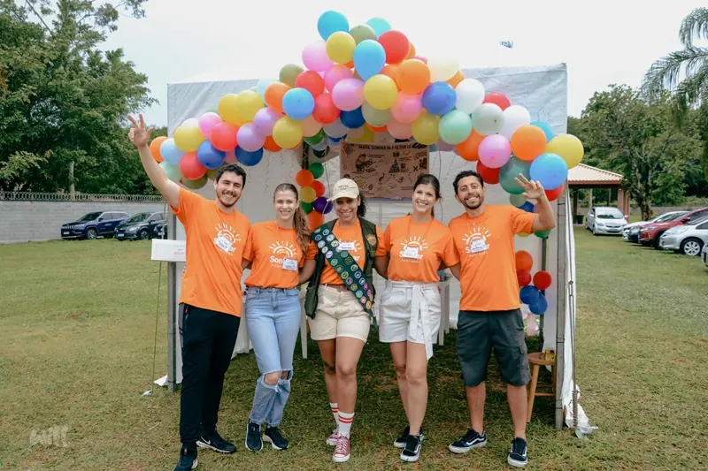

Voluntário de apoio
Você faz a festa acontecer antes mesmo de ela começar.
- Logística: check-in de crianças e voluntários, alimentação, arrecadação de alimentos e transporte das crianças até o local.
- Decoração: transformar o espaço para receber voluntários e crianças.
- Atividades das estações: criar e organizar, em equipe, as brincadeiras que transmitem os valores do Sonhar.
Importante: o voluntário de apoio não fica com uma criança ao longo da festa. Você é uma extensão da coordenação.
Me inscrever